Chapter 7: Efficient Diversification — 学习笔记
来源：Investments (Bodie, Kane, Marcus), 13th Edition, Chapter 7
7.1 分散化与组合风险 (Diversification and Portfolio Risk)
想象你只持有一只股票。你面临的不确定性来自两个层面。一方面是宏观经济环境的波动——商业周期、通胀、利率、汇率，这些因素无差别地冲击所有企业；另一方面是这家公司自身的研发成败、管理层变动等，只和它一家有关。
这就引出了贯穿本章的两个核心概念：
- 系统性风险 (Systematic Risk)，也叫市场风险 (Market Risk) 或不可分散风险 (Nondiversifiable Risk)：由整个经济体的共同因素驱动，无论持有多少只股票都无法消除。
- 非系统性风险 (Nonsystematic Risk)，也叫公司特有风险 (Firm-specific Risk)、独特风险 (Unique Risk) 或可分散风险 (Diversifiable Risk)：源于单个企业的特殊事件，可以通过持有多只股票来稀释。
朴素分散化 (naïve diversification) 的逻辑很直观：把资金从一只股票分散到两只，再到更多只，公司特有因素相互抵消的机会越来越大，组合的波动率也就不断下降。但无论扩展到多少只股票，宏观因素带来的冲击始终存在——这部分风险是分散化的天花板。
Figure 7.1 用两幅图展示了这一点。Panel A 假设所有风险都是公司特有的，组合标准差可以随持股数无限趋近于零；Panel B 是更现实的情形，标准差降到一定水平后就趋于平坦，残留的就是市场风险。Figure 7.2 给出了实证验证：从 NYSE 随机选股构建等权组合，单只股票的年化标准差约 27.8%，充分分散后只能降到约 17.4%。
📖 参见书中 Figure 7.1（p.202）和 Figure 7.2（p.203）
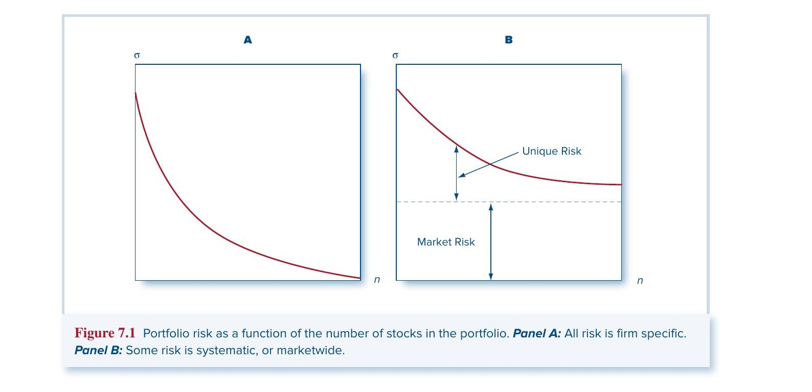
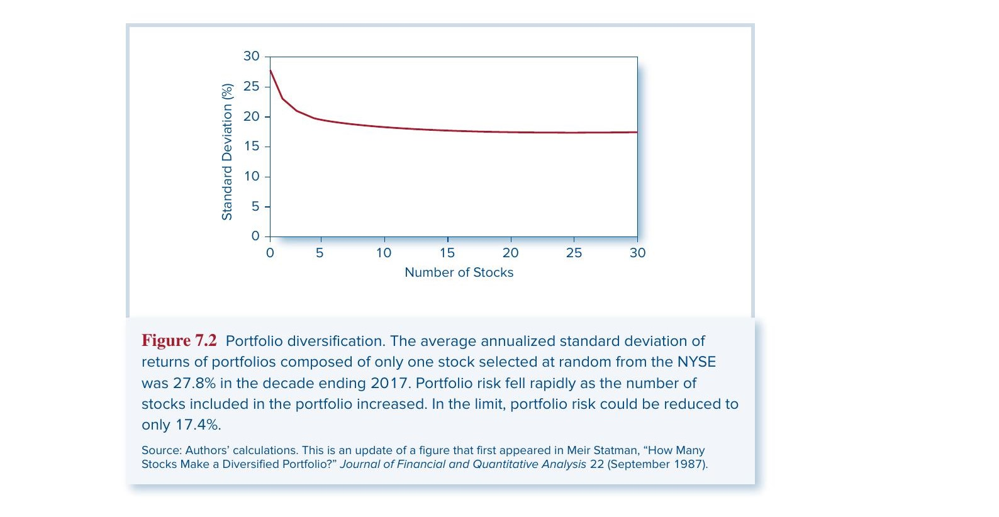
书中还用保险原理 (Insurance Principle) 做类比：保险公司通过承保大量独立保单来分散风险，每张保单只占总组合的很小一部分，这与投资组合分散化的逻辑完全一致（7.5 节会更深入讨论）。
本节核心结论：分散化能消除公司特有风险，但无法消除系统性风险。
7.2 两种风险资产的组合 (Portfolios of Two Risky Assets)
上一节讲的是直觉，这一节开始定量。书中用两只共同基金作为例子：一只债券基金 $D$（specializing in long-term debt）和一只股票基金 $E$（specializing in equity）。Table 7.1 列出了它们的参数：$E(r_D) = 8\%$，$\sigma_D = 12\%$；$E(r_E) = 13\%$，$\sigma_E = 20\%$；两者的相关系数 $\rho_{DE} = 0.30$。
📖 参见书中 Table 7.1（p.204）
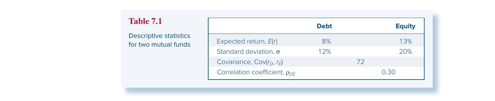
期望收益：简单的加权平均
设投资于债券的比例为 $w_D$，股票为 $w_E = 1 - w_D$，组合的期望收益就是二者的线性插值：
$E(r_p) = w_D E(r_D) + w_E E(r_E) \tag{7.2}$
没有任何惊喜——调整权重只是在两个端点之间滑动。
方差：分散化发生的地方
组合方差就不一样了。它不是各资产方差的加权平均，而是：
$\sigma_p^2 = w_D^2 \sigma_D^2 + w_E^2 \sigma_E^2 + 2w_D w_E \text{Cov}(r_D, r_E) \tag{7.3}$
第三项——协方差项——正是分散化发挥作用的关键。如果两种资产的收益不是完全同步波动（$\rho < 1$），这一项就会"拉低"组合方差，使其小于各资产方差的加权平均。
利用 $\text{Cov}(r_D, r_E) = \rho_{DE}\sigma_D\sigma_E$，方差公式可以改写为更直观的形式：
$\sigma_p^2 = w_D^2 \sigma_D^2 + w_E^2 \sigma_E^2 + 2w_D w_E \sigma_D \sigma_E \rho_{DE} \tag{7.7}$
现在相关系数的影响一目了然：$\rho$ 越小，第三项越小（甚至为负），组合风险越低。
书中用加边协方差矩阵 (Bordered Covariance Matrix) 提供了一种系统化的计算方法：在协方差矩阵的行和列标上权重，每个元素乘以对应的行权重和列权重，全部求和就是组合方差。这个方法可以直接推广到任意数量的资产。
📖 参见书中 Table 7.2（p.205）和 Example 7.1（三资产情形）
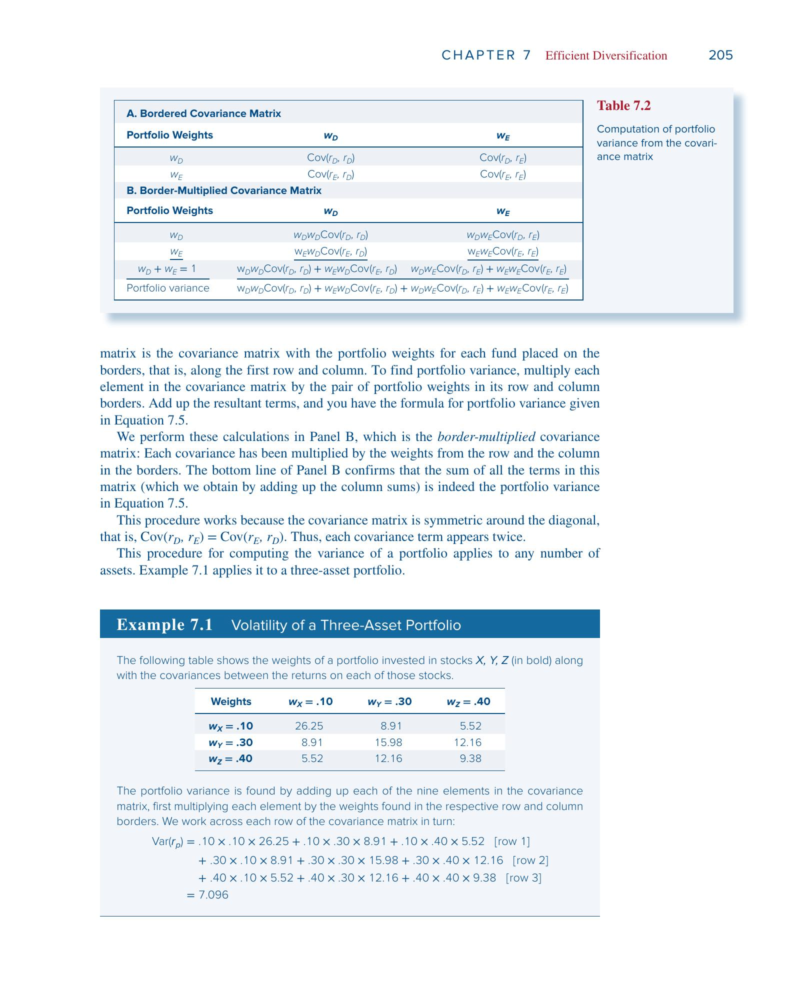
三种极端情形
为了建立直觉，来看三种特殊的相关系数取值：
$\rho = 1$（完全正相关）——方差简化为完全平方，$\sigma_p = w_D\sigma_D + w_E\sigma_E$，标准差就是加权平均，分散化毫无收益。
$\rho = -1$（完全负相关）——同样简化为完全平方，但可以取到零：$\sigma_p = |w_D\sigma_D - w_E\sigma_E|$。只需令 $w_D = \sigma_E / (\sigma_D + \sigma_E)$ 就能构造出一个零风险的组合——完美对冲 (perfect hedge)。
$-1 < \rho < 1$——介于两个极端之间，组合标准差严格小于加权平均但无法降到零。$\rho$ 越低，分散化效果越好。
最小方差组合与机会集
对于任意 $\rho$，都存在一个使组合方差最小的权重配比，称为最小方差组合 (Minimum-Variance Portfolio)。其权重为：
$w_{\min}(D) = \frac{\sigma_E^2 - \text{Cov}(r_D, r_E)}{\sigma_D^2 + \sigma_E^2 - 2\text{Cov}(r_D, r_E)}$
Table 7.3 列出了四种 $\rho$ 值下不同权重组合的期望收益和标准差。在 $\rho = 0.30$ 的情形下，最小方差组合的权重是 $w_D = 0.82$，$w_E = 0.18$，标准差为 11.45%——比债券基金（12%）和股票基金（20%）单独持有都低。这就是分散化的力量。
📖 参见书中 Table 7.3（p.207）
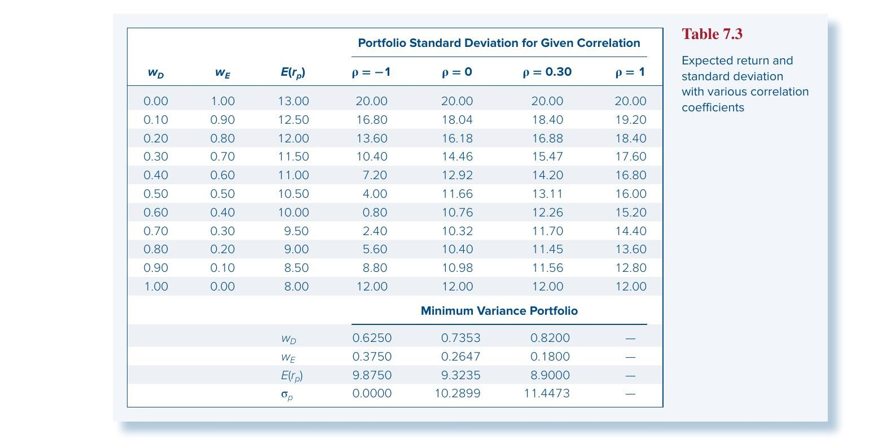
把这些期望收益和标准差的配对画在均值-标准差空间中，就形成了组合机会集 (Portfolio Opportunity Set)——两种资产所有可能组合的轨迹。Figure 7.5 展示了不同 $\rho$ 值下的机会集形状。$\rho = 1$ 时是一条直线（无分散化收益）；$\rho$ 越小曲线越向左（西北方向）弯曲；$\rho = -1$ 时变成 V 形，顶点触及纵轴。
📖 参见书中 Figure 7.3 & 7.4（p.208）和 Figure 7.5（p.210）
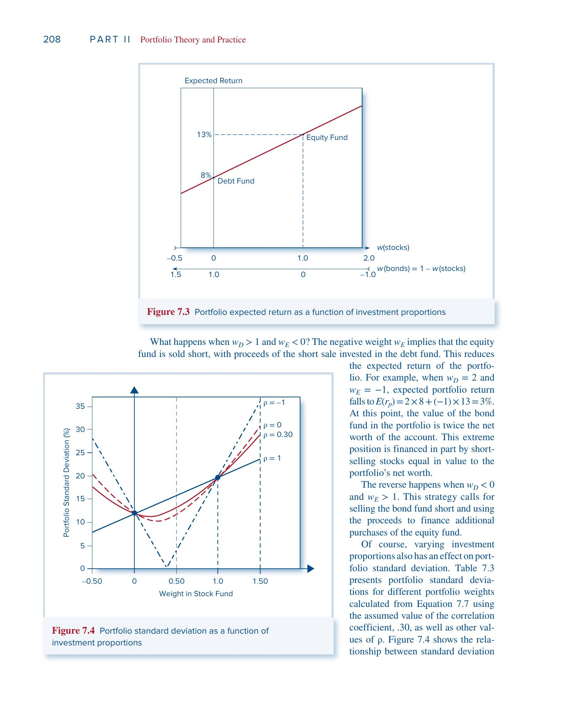
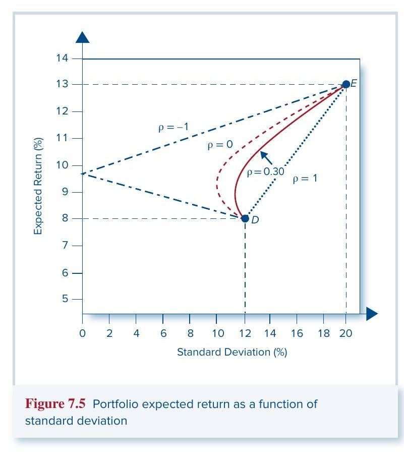
本节核心结论：只要两种资产不是完全正相关，分散化就能在不牺牲期望收益的前提下降低风险。相关系数越低，效果越好。
7.3 股票、债券与国库券的资产配置 (Asset Allocation with Stocks, Bonds, and Bills)
上一节我们只在两种风险资产之间做选择。现在加入第三种——无风险国库券 (T-bills)，$r_f = 5\%$。问题变成：如何在三者之间分配资金？
用 Sharpe 比率挑选最优风险组合
回顾 Chapter 6 的结论：投资者通过把无风险资产和某个风险组合混合来构造完整组合，混合的轨迹是一条从 $r_f$ 出发穿过该风险组合的直线——资本配置线 (Capital Allocation Line, CAL)。CAL 的斜率就是夏普比率 (Sharpe Ratio)：
$S_p = \frac{E(r_p) - r_f}{\sigma_p}$
斜率越大，意味着承担每单位风险所获得的超额收益越高。所以投资者的目标是找到使 CAL 斜率最大的那个风险组合。
Figure 7.6 画了两条 CAL，分别穿过机会集上的组合 $A$（最小方差组合，$S_A = 0.34$）和组合 $B$（$S_B = 0.38$）。显然 $B$ 优于 $A$——但何必停在 $B$？继续旋转 CAL 使其更陡，直到它与机会集相切，切点就是 Figure 7.7 中标记为 $P$ 的最优风险组合 (Optimal Risky Portfolio)，也叫切点组合 (Tangency Portfolio)。
📖 参见书中 Figure 7.6（p.211）和 Figure 7.7（p.212）
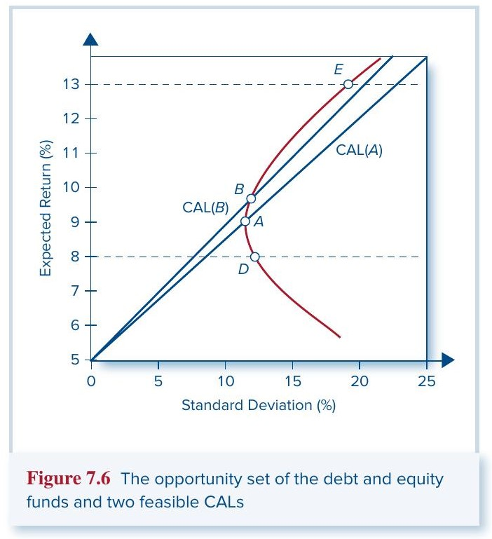
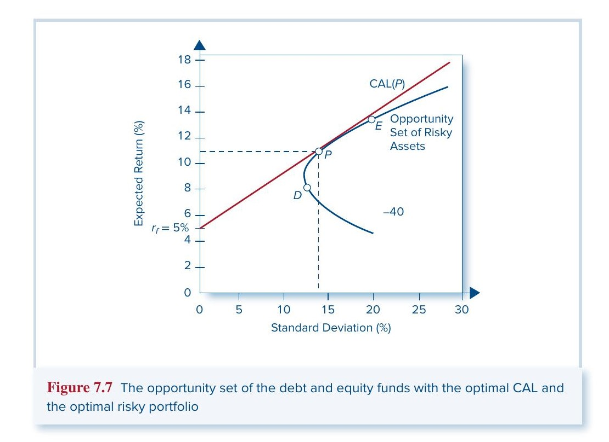
解析解
对于两种风险资产加一个无风险资产的情形，最大化 Sharpe 比率可以得到显式公式（注意使用超额收益 $R = r - r_f$）：
$w_D = \frac{E(R_D)\sigma_E^2 - E(R_E)\text{Cov}(R_D, R_E)}{E(R_D)\sigma_E^2 + E(R_E)\sigma_D^2 - [E(R_D) + E(R_E)]\text{Cov}(R_D, R_E)} \tag{7.13}$
$w_E = 1 - w_D$
代入数据（$E(R_D) = 3\%$，$E(R_E) = 8\%$，$\sigma_D^2 = 144$，$\sigma_E^2 = 400$，$\text{Cov} = 72$），得到 $w_D = 0.40$，$w_E = 0.60$。最优风险组合的期望收益为 11%，标准差为 14.2%，Sharpe 比率为 0.42。
从最优风险组合到最优完整组合
找到 $P$ 之后，每个投资者根据自己的风险厌恶系数 $A$ 决定在 $P$ 和国库券之间如何分配：
$y = \frac{E(r_P) - r_f}{A\sigma_P^2} \tag{7.14}$
⚠️ 使用此公式时收益率必须用小数形式。
例如 $A = 4$ 的投资者：$y = (0.11 - 0.05) / (4 \times 0.142^2) = 0.7439$，即 74.39% 投入组合 $P$，25.61% 投入国库券。再把 $P$ 内部的结构展开——$P$ 本身是 40% 债券 + 60% 股票——最终的最优完整组合 (Optimal Complete Portfolio) 配置为：债券 29.76%、股票 44.63%、国库券 25.61%。
📖 参见书中 Figure 7.8（最优完整组合的图形解法）和 Figure 7.9（资产配置饼图），p.214
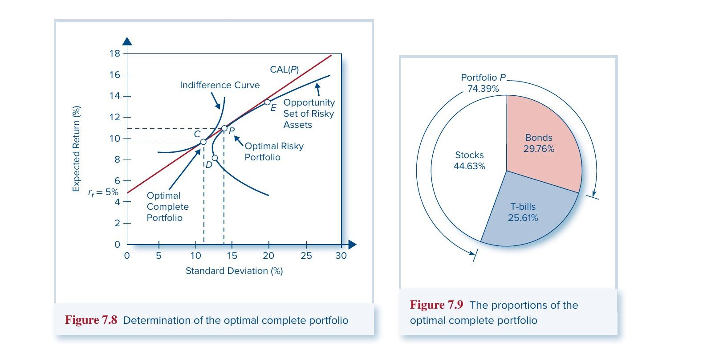
整个流程可以归纳为三步：（1）估计输入参数；（2）用 Eq. 7.13 求最优风险组合 $P$ 及其性质；（3）用 Eq. 7.14 确定 $P$ 与无风险资产的配置比例，再分解到各个资产。
7.4 Markowitz 组合优化模型 (The Markowitz Portfolio Optimization Model)
推广到多资产
前面的思路在两种风险资产上演示完毕，现在推广到 $n$ 种资产。好消息是逻辑完全一样，只是计算量更大。$n$ 种资产的组合期望收益和方差为：
$E(r_p) = \sum_{i=1}^{n} w_i E(r_i) \tag{7.15}$
$\sigma_p^2 = \sum_{i=1}^{n} \sum_{j=1}^{n} w_i w_j \text{Cov}(r_i, r_j) \tag{7.16}$
输入量增长很快：50 只证券需要 50 个期望收益、50 个方差、以及 $50 \times 49 / 2 = 1{,}225$ 个不同的协方差。这一整套估计称为输入列表 (Input List)。
有效前沿
给定输入列表，对每个目标期望收益水平找方差最小的组合，把这些组合连起来就形成了最小方差前沿 (Minimum-Variance Frontier)。前沿最左端是全局最小方差组合 (Global Minimum-Variance Portfolio)。
所有单一资产都落在前沿的右侧内部——说明只持有单一资产是低效的，分散化总能改进。前沿的下半部分也是无效的（对于同样的标准差，上半部分有更高的期望收益），有效的上半部分称为有效前沿 (Efficient Frontier of Risky Assets)。理性投资者只会从有效前沿上选择。
引入无风险资产后，从 $r_f$ 出发与有效前沿相切的 CAL 就是最优的——切点组合 $P$ 是所有投资者共享的最优风险组合。
📖 参见书中 Figure 7.10（最小方差前沿与有效前沿）和 Figure 7.11（最优 CAL），p.217
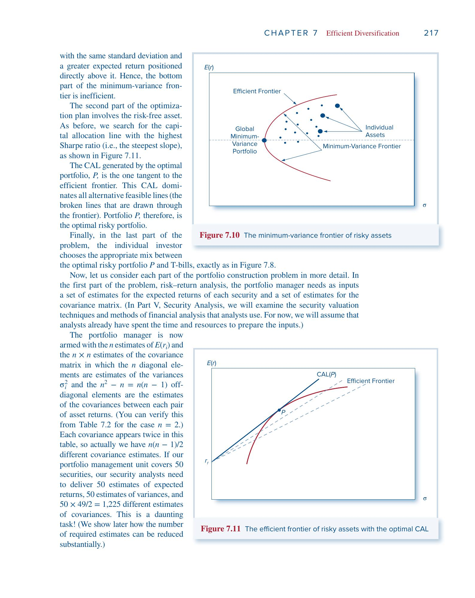
分离定理 (Separation Property)
这里得出了本章最重要的理论结论：
基金经理向所有客户提供同一个最优风险组合 $P$，无论客户的风险厌恶程度如何。 客户的偏好只影响第二步——在 $P$ 和无风险资产之间的配置比例。
这个结果由 Nobel 奖得主 James Tobin 首先提出，称为分离定理。它说的是投资决策可以拆成两个独立任务：（1）确定最优风险组合 $P$（纯技术问题，与偏好无关）；（2）决定在 $P$ 和无风险资产之间的比例（个人偏好问题）。
实际含义：理论上所有投资者只需要两只基金——一只货币市场基金和一只持有最优风险组合的共同基金。这就是共同基金行业的理论基础。
📖 参见书中 Figure 7.13（从有效前沿上不同组合出发的 CAL），p.220
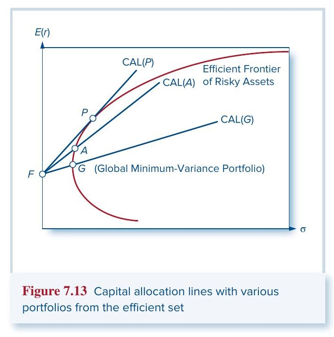
分散化力量的数学表达
考虑等权组合（$w_i = 1/n$），定义平均方差 $\bar{\sigma}^2$ 和平均协方差 $\overline{\text{Cov}}$，组合方差可以简洁地写成：
$\sigma_p^2 = \frac{1}{n}\bar{\sigma}^2 + \frac{n-1}{n}\overline{\text{Cov}} \tag{7.20}$
当 $n \to \infty$ 时，第一项趋向零（公司特有风险被消除），第二项趋向 $\overline{\text{Cov}}$（系统性风险残留）。
如果所有证券有相同的标准差 $\sigma$ 和两两相关系数 $\rho$，则更简洁：
$\sigma_p^2 = \frac{1}{n}\sigma^2 + \frac{n-1}{n}\rho\sigma^2 \tag{7.21}$
极限值 $\sigma_p \to \sqrt{\rho}\,\sigma$ 就是不可分散的系统性标准差。
Table 7.4 用 $\sigma = 50\%$ 给出了数值例子。$\rho = 0$ 时，100 只股票的标准差降到 5%；$\rho = 0.40$ 时，100 只股票的标准差为 31.86%，已非常接近极限值 $\sqrt{0.4} \times 50 = 31.62\%$。
📖 参见书中 Table 7.4（p.223）
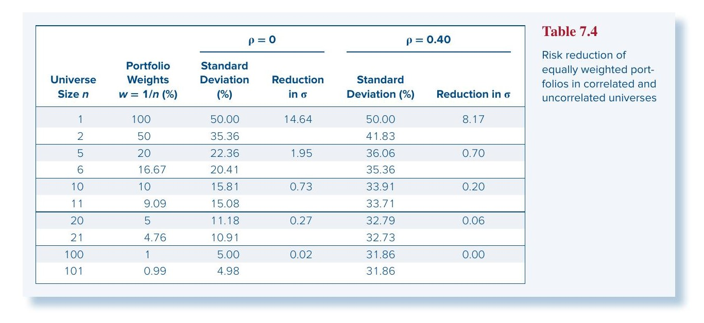
最重要的洞察：在充分分散的组合中，单只证券对组合风险的贡献取决于它与其他证券的协方差，而非它自身的方差。 这个结论在 Chapter 9 讨论 CAPM 均衡定价时将成为核心逻辑。
7.5 风险汇聚、风险分担与时间分散化 (Risk Pooling, Risk Sharing, and Time Diversification)
这一节纠正一个非常流行的误解——"长期投资更安全"。书中通过保险行业的类比，厘清了分散化真正的作用机制。
风险汇聚不等于分散化
假设保险公司卖出 $n$ 张独立保单，每张赔付的方差为 $\sigma^2$。总赔付的方差为：
$\text{Var}\left(\sum_{i=1}^{n} x_i\right) = n\sigma^2 \tag{7.22}$
而平均赔付的方差为：
$\text{Var}\left(\frac{1}{n}\sum_{i=1}^{n} x_i\right) = \frac{\sigma^2}{n} \tag{7.23}$
表面上看，Eq. 7.23 说平均赔付越来越可预测。但 Eq. 7.22 告诉我们，总风险其实在增加——每多卖一张保单，总赔付的不确定性就多出 $\sigma^2$。书中用了一个很精彩的类比：这就像赌徒回到轮盘桌多转一轮，他的平均收益更可预测了，但赢输的总金额一定更不确定。
单纯把多个独立风险源集中在一起，叫做风险汇聚 (Risk Pooling)。它只是故事的一半。真正降低每个人风险的是风险分担 (Risk Sharing)——保险公司发行股票给 $n$ 个投资者，随着保单池变大，同时也有更多人来分摊，每个人对任何单一保单的敞口在缩小。
映射到投资组合：真正的分散化是把固定的投资预算分配到多个资产上，限制对任何单一风险源的敞口。持有 \$100,000 的 Microsoft 想要分散化，正确做法是把这笔钱分散到多只股票，而不是额外拿 \$100,000 去买 Amazon——后者只是增加了在险资金，等于保险公司多卖保单但没多发股票。
时间分散化是幻觉
很多人相信长期持有股票更安全：虽然短期有波动，但"大数定律"保证正的风险溢价最终会胜出，所以长期投资者应该更大胆地配置股票。
书中的反驳逻辑是：延长投资期限就相当于多卖保单——是风险汇聚，不是风险分担。你在股市中暴露的总资金量随时间增加，所以总风险也在增加。
Table 7.5 用具体数字说明了这一点（年均收益 5%，年标准差 30%，使用连续复合收益率）。从中可以看到两个趋势：一方面，正收益的概率随期限上升（1 年 56.6%→ 30 年 81.9%），这就是"时间分散化"论点的依据；另一方面，尾部损失随期限急剧恶化——1% VaR 的累计损失从 1 年的 47.7% 飙升到 30 年的 90.2%。
概率在变好，但万一出事，损失的严重程度也在急剧增大。两者结合来看，长期投资并不比短期更"安全"。
📖 参见书中 Table 7.5（p.227）
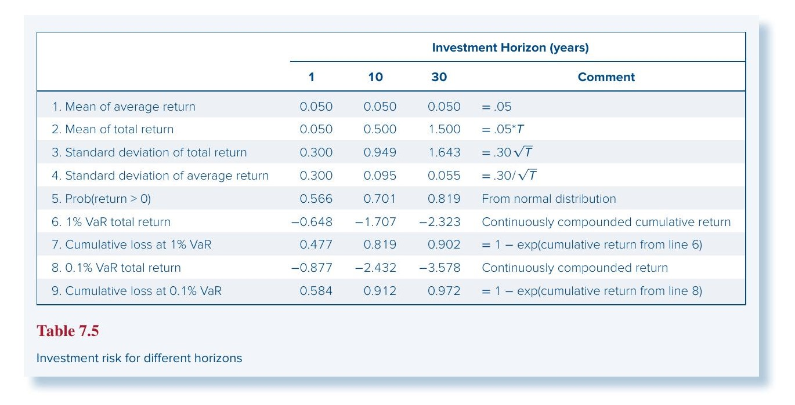
如果一个 2 年期投资者想真正实现"时间分散化"，正确做法是每年只投入一半资金到股市（总在险资金不变），而不是两年都全额投入。这才是风险分担。
重要公式汇总
一、组合收益与风险（两资产）
| 公式 | 编号 |
|---|---|
| $r_p = w_D r_D + w_E r_E$ | (7.1) |
| $E(r_p) = w_D E(r_D) + w_E E(r_E)$ | (7.2) |
| $\sigma_p^2 = w_D^2 \sigma_D^2 + w_E^2 \sigma_E^2 + 2w_D w_E \text{Cov}(r_D, r_E)$ | (7.3) |
| $\text{Cov}(r_D, r_E) = \rho_{DE} \sigma_D \sigma_E$ | (7.6) |
| $\sigma_p^2 = w_D^2 \sigma_D^2 + w_E^2 \sigma_E^2 + 2w_D w_E \sigma_D \sigma_E \rho_{DE}$ | (7.7) |
二、特殊情形下的组合标准差
| 条件 | 公式 | 编号 |
|---|---|---|
| $\rho = 1$ | $\sigma_p = w_D \sigma_D + w_E \sigma_E$ | (7.9) |
| $\rho = -1$ | $\sigma_p = \lvert w_D \sigma_D - w_E \sigma_E \rvert$ | (7.11) |
| $\rho = -1$ 时零方差权重 | $w_D = \dfrac{\sigma_E}{\sigma_D + \sigma_E}$ | (7.12) |
三、最小方差组合
$w_{\min}(D) = \frac{\sigma_E^2 - \text{Cov}(r_D, r_E)}{\sigma_D^2 + \sigma_E^2 - 2\text{Cov}(r_D, r_E)}$
四、最优风险组合（Sharpe 比率最大化）
$w_D = \frac{E(R_D)\sigma_E^2 - E(R_E)\text{Cov}(R_D, R_E)}{E(R_D)\sigma_E^2 + E(R_E)\sigma_D^2 - [E(R_D) + E(R_E)]\text{Cov}(R_D, R_E)} \tag{7.13}$
$S_p = \frac{E(r_p) - r_f}{\sigma_p}$
五、最优资本配置
$y = \frac{E(r_P) - r_f}{A\sigma_P^2} \tag{7.14}$
六、$n$ 资产推广
$E(r_p) = \sum_{i=1}^{n} w_i E(r_i) \tag{7.15}$
$\sigma_p^2 = \sum_{i=1}^{n} \sum_{j=1}^{n} w_i w_j \text{Cov}(r_i, r_j) \tag{7.16}$
七、等权组合与分散化极限
$\sigma_p^2 = \frac{1}{n}\bar{\sigma}^2 + \frac{n-1}{n}\overline{\text{Cov}} \tag{7.20}$
同质情形：$\sigma_p^2 = \dfrac{1}{n}\sigma^2 + \dfrac{n-1}{n}\rho\sigma^2$，极限 $\sigma_p \to \sqrt{\rho}\,\sigma$ (7.21)
八、风险汇聚 vs. 风险分担
| 公式 | 随 $n$ 的趋势 | |
|---|---|---|
| 总风险（风险汇聚） | $\text{Var}\!\left(\sum x_i\right) = n\sigma^2$ | 增大 |
| 人均风险（风险分担） | $\text{Var}\!\left(\frac{1}{n}\sum x_i\right) = \frac{\sigma^2}{n}$ | 减小 |
全章核心结论
- 分散化消除公司特有风险，但无法消除系统性风险。
- 组合方差取决于资产之间的协方差，而非各自的方差。 相关系数越低，分散化效果越好。
- 引入无风险资产后，最优风险组合是 CAL 与有效前沿的切点（Sharpe 比率最高的组合）。
- 分离定理：最优风险组合的确定是纯技术问题，与投资者个人偏好无关。 偏好只影响在风险组合和无风险资产之间的配置比例。
- 真正的分散化 = 固定总投入 + 分散敞口。 延长投资期限只是风险汇聚，不是风险分担，时间本身不提供分散化。